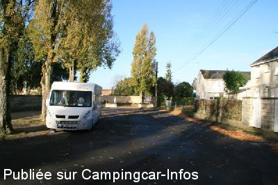
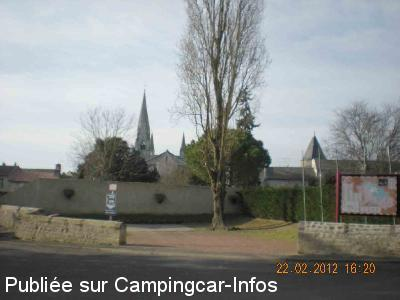
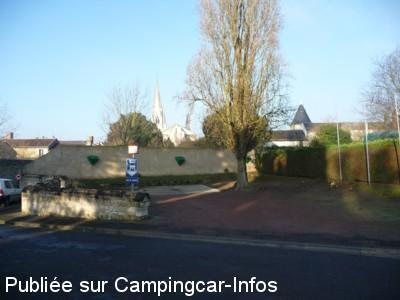
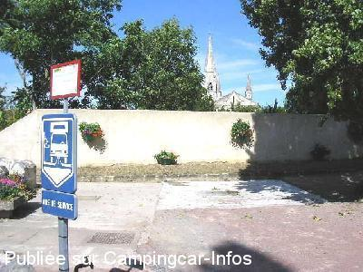

ASN = Aire de services avec stationnement nuit possible de :
LE PUY NOTRE DAME
(N° 766)
Accès/adresse :
Rue du Parc
Place Gate-Argent
49260 LE PUY NOTRE DAME
Place Gate-Argent
49260 LE PUY NOTRE DAME
Latitude : (Nord) 47.12389° Décimaux ou 47° 7′ 26′′
Longitude : (Ouest) -0.23155° Décimaux ou 0° 13′ 53′′
Tarif : Gratuit
Type de borne : Artisanale
Services :


Tous commerces
Autres informations :
Ouverte toute l'année
15 emplacements
Bruyante en bord de route
Tel : +33 (0)241 522 634
Trappe au sol à ouvrir pour les vidanges

Le 10/02/2015 par PTH72

Le 02/03/2012 par michele.be

Le 31/12/2008 par

Le 13/08/2005 par
de
PTH72
le 10/02/2015 :
Passés le 6 novembre 2014.
Aire de service effectivement complète.
Mais pour le stationnement c'est un peu étroit. Nous avons préféré dormir le long de la route (il faut des cales).
Dommage que les commerces soient un peu loin.
Mais très belle collégiale.
Merci à la commune.
Passés le 6 novembre 2014.
Aire de service effectivement complète.
Mais pour le stationnement c'est un peu étroit. Nous avons préféré dormir le long de la route (il faut des cales).
Dommage que les commerces soient un peu loin.
Mais très belle collégiale.
Merci à la commune.
de
michele.be
le 02/03/2012 :
De passage le 22/02/2012 aire de services en coin d'une rue, juste assez grande pour les services mais sur la place pour stationner.
Borne en hors gel
Un grand merci aux réalisateurs et la ville.
De passage le 22/02/2012 aire de services en coin d'une rue, juste assez grande pour les services mais sur la place pour stationner.
Borne en hors gel
Un grand merci aux réalisateurs et la ville.
de
Sombreffe
le 31/08/2011 :
Nous y sommes passés le 12/o8/2011 et c´est jusqu´ici à nos yeux une des meilleures aires que nous avons utilisées.
Nous n´avons pas trouvé l´aire si bruyante que ca même si effectivement on entend quelques passages le matin.
Et nous n´avons pas eu de problème de poignée pour vidanger, peut-être cela a-t-il été résolu depuis le précédent commentaire?
En tout cas pour une aire municipale totalement gratuite, il n´y a franchement rien à redire: à d´autres endroits, on paye juste pour le stationnement et les services en sus, ici tout est gratuit! Merci en effet à la commune!
Nous y sommes passés le 12/o8/2011 et c´est jusqu´ici à nos yeux une des meilleures aires que nous avons utilisées.
Nous n´avons pas trouvé l´aire si bruyante que ca même si effectivement on entend quelques passages le matin.
Et nous n´avons pas eu de problème de poignée pour vidanger, peut-être cela a-t-il été résolu depuis le précédent commentaire?
En tout cas pour une aire municipale totalement gratuite, il n´y a franchement rien à redire: à d´autres endroits, on paye juste pour le stationnement et les services en sus, ici tout est gratuit! Merci en effet à la commune!
de
nicole et michel
le 16/03/2011 :
Ns avons trouvé l'aire de sces sans problème, avec l'adresse, rue du Parc, eau gratuite, pour vider K7 eaux noires il faut soulever la grille où il faudrait une poignée mais à part cela, le Stationnement en face parfait dans un charmant village à visiter, avec des habitants très gentils et accueillants Merci à la commune
Ns avons trouvé l'aire de sces sans problème, avec l'adresse, rue du Parc, eau gratuite, pour vider K7 eaux noires il faut soulever la grille où il faudrait une poignée mais à part cela, le Stationnement en face parfait dans un charmant village à visiter, avec des habitants très gentils et accueillants Merci à la commune
de
Jacques et Marie-France
le 28/08/2010 :
Certes la signalétique pour y accéder est très discrète, il faut aller en direction du cimetière et ne pas entrer dans le centre du bourg. Nous n'étions que de passage pour visiter la collégiale. A noter des échanges très cordiaux avec quelques personnes du village, y compris avec des voisins immédiats à l'aire!
Certes la signalétique pour y accéder est très discrète, il faut aller en direction du cimetière et ne pas entrer dans le centre du bourg. Nous n'étions que de passage pour visiter la collégiale. A noter des échanges très cordiaux avec quelques personnes du village, y compris avec des voisins immédiats à l'aire!
de
Bruno Maréchal
le 03/05/2007 :
Pas facile de trouver cette aire. Un conseil: demander le cimetière. Pas facile de se reposer quand on entend des chiens qui aboient toute la nuit. Le réseau France Passion indique 4 adresses de stationnement dans ce joli village. A voir, la relique de la Vierge dans la collégiale.
Pas facile de trouver cette aire. Un conseil: demander le cimetière. Pas facile de se reposer quand on entend des chiens qui aboient toute la nuit. Le réseau France Passion indique 4 adresses de stationnement dans ce joli village. A voir, la relique de la Vierge dans la collégiale.
de
Christophe
le 08/05/2006 :
Pour confirmer un précédent message, ce week-end, nous avons visité les caves Sainte Maure (ou la Cave Vivante du Champignon), une visite instructive, agréable et pleine d'humour!
Pour confirmer un précédent message, ce week-end, nous avons visité les caves Sainte Maure (ou la Cave Vivante du Champignon), une visite instructive, agréable et pleine d'humour!